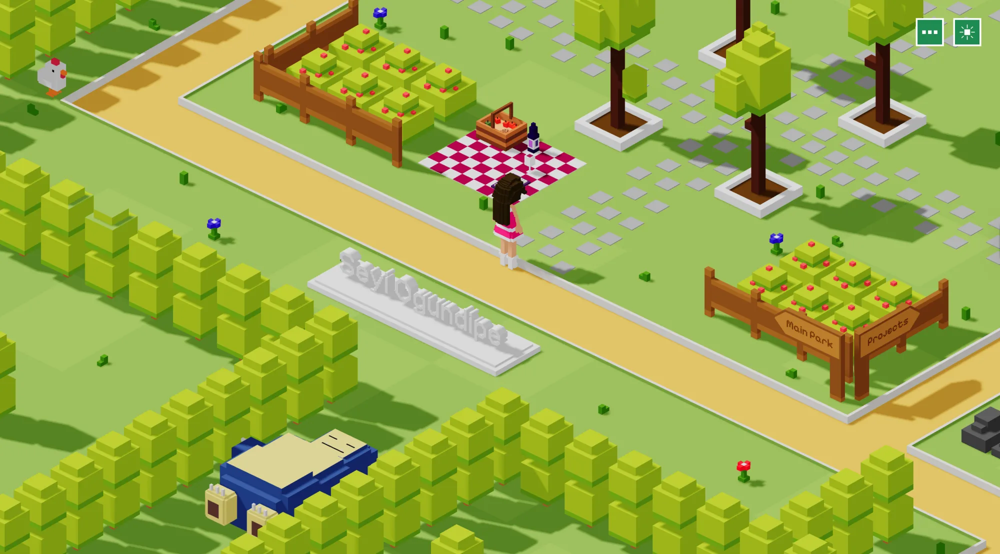
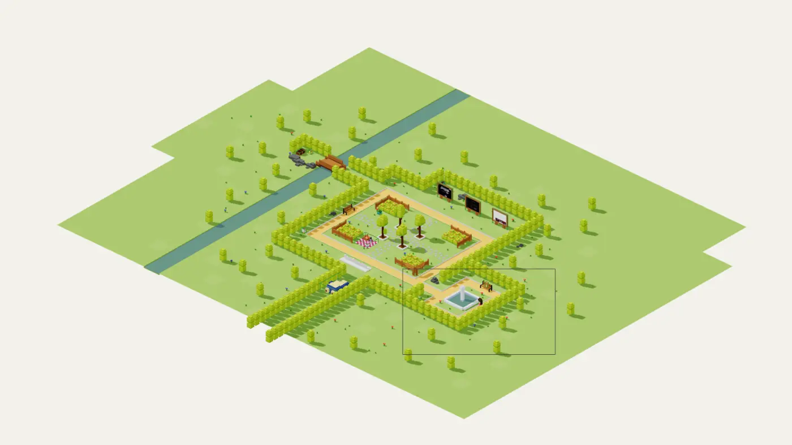
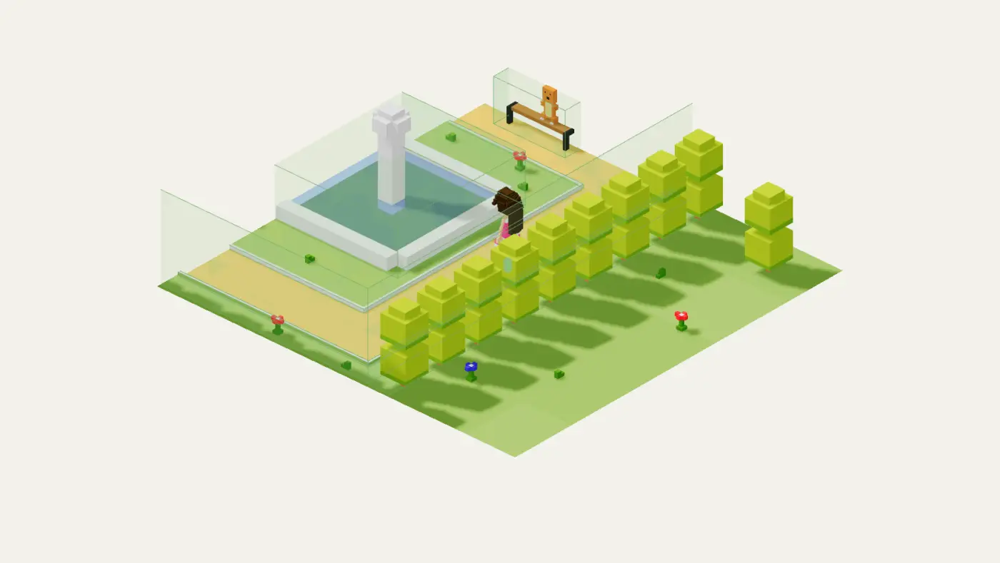

Case study / 011
Building Seyi's Park: a portfolio you can walk around
A park in the browser, seen from above like a model on a table. You hop a small character along the paths, and the work is on billboards you walk up to and click.

01
Intro
A list is the usual way to show projects. This one is a place instead.
Seyi's Park is a square of grass, hedges and paths. You start beside a fountain. Up the paths are trees, a picnic blanket, three billboards, a chest, and six creatures who hop when you poke them.
This page takes the park apart: the one file it's made from, the hop, the floor you never see, the four sounds and the switch to night. Every number on it comes from the park's own code.
The stack. three.js 0.149 through an import map, GSAP 3.12.5 for the hops and the switch to night, Howler 2.2.4 for sound. No build step: one page, one script, one stylesheet and one model.
02
Everything is found by name
The whole park is one file exported from Blender, Portfolio-test2.glb. The code doesn't place anything. When the file loads, it walks through every object in it and checks the name.
Character becomes the player. Ground_Collider becomes the floor, then hides. Project_1, Project_2 and Project_3 open the Bybull, Clark AI and Linnked cards, Chest opens About Me and Picnic opens My Mind. Six creature names hop when clicked. The hedges, paths, trees and fountain are one object called Level, the lettering is another called Text, and the code only draws those two.
So moving a billboard is a Blender job. Move it, export again, and the code finds it in its new place.

Loading the park, 4.2 MB…
- OrthographicCamera
- fitted to the whole park
Portfolio-test2.glb, loaded here with three.js and lit with the park's own sun. The green squares mark the 11 things that answer a click. Point at anything to see its name and what main.js does with it, click a creature to make it hop, and drag to turn the park.Tap anything to see its name and what main.js does with it. Tap a creature to make it hop. Drag sideways to turn the park.- Triangles
- 79,599
- Meshes
- 15
- Read by name
- 13 of 15
- The file
- 4.2 MB
The creatures. Five of the six are Pokémon, Nintendo's characters, there as a fan's nod and not as original designs. The sixth is a chicken. Snorlax, the biggest, hops from its own size.
Why it looks like a model on a table
The camera is orthographic. Things stay the same size however far away they are, so the hedges at the back are as big as the ones at the front, and the park reads as a diorama. Switch Fig. 2 to Perspective and the same park turns into a photograph.
It never turns, either. Every frame, the camera sits at the same offset from the character, 33 units along one axis and 37 along the other, at a height of 39, looking at a spot 10 units ahead of it on both. At zoom 2.2 the view is 45 units tall. The park is about 310 units across, so you walk to see the rest.
Zoom. The scroll wheel pulls the camera back to show more of the park. The reel below does it at 19 seconds.
03
Every step is a hop
The character doesn't walk. Press an arrow and it jumps: the code sets its upward speed to 11, pushes it sideways at 7, and lets a gravity of 30 bring it down. Hold the arrow and the next hop starts on the frame it lands.
On take-off, GSAP squashes it to 90% of its height, stretches it to 110%, then settles it, half a second in all. A short sound plays with every hop.
The physics counts in frames. Each frame moves everything by a fixed step of 0.035, so a hop is 22 frames long, about a third of a second on a 60 Hz screen. Hold an arrow and you get a run of quick, even bounces.
Press → or space to hopTap either side to hop
main.js, with its dot following the real GSAP timeline.Scale. The character is 7.57 units tall. A hop lifts it 2.21, under a third of its height, and carries it 5.39 along.
04
The floor you never see
You never stand on the park you see. Ground_Collider is a second, plainer copy of it: a floor that stops at the hedges, walls where the hedges stand, and a plain box for every flower bed, tree, bench, billboard and the fountain. It's 8,196 triangles against the park's 63,470. The code turns it into an octree, a tree of boxes that makes "what am I touching?" cheap to ask, and then hides it.
The character is a capsule, 0.35 units in radius and 1.35 tall, at its feet. Each frame the capsule moves, the octree reports any overlap, and the capsule is pushed back out. If the surface it hit faces up, the character is on the floor and its sideways speed drops to zero. That's what ends a hop.
Fall below −20 and it goes back to where it started. So does pressing R.

Loading the park, 4.2 MB…
Click here, then hop with the arrow keysHop with the arrows below
capsule, r 0.35
- x −9.66
- y 9.60
- z −28.55
- vy 0.00
- on floor yes
main.js against the real collider, through the park's own camera. Click the picture, then hop with the arrow keys or WASD. R takes you back to the start.Hop with the arrows under the picture. The view is cut to a square of ground round the character so it sits on the page. The green pill at the character's feet is the capsule, and nothing else touches anything.Capsule against character. The capsule is 1.35 units tall. The character drawn around it is 7.57. Only the capsule touches anything; the rest of the character is just drawn.
05
Four sounds
Sound is what makes it feel like a game and not a 3D web page. There are four, played through Howler: music that loops once you press Enter Park!, a sound for every hop, one for the cards and one for the creatures.
The card sound does the most work. It plays when a card opens and when it closes, when you press Enter Park!, when you switch between day and night, and when you turn the sound off. The hop plays at full volume, the card and creature sounds at half, the music at 0.3.
One flag, isMuted, sits in front of every one of them. The sound button flips it and pauses the music.
main.js gives them, converted from Ogg to MP3 for this page. Press a sound to hear it, or press one of the things that trigger it. The waveforms are drawn from the files. Sound only plays when you press.Lengths. The hop lasts 0.16 seconds, the card sound 0.14 and the creature sound 0.19. The music runs 2 minutes 4 seconds, then loops.
06
Night takes a second
The sun button turns the park to night. Nothing in the model changes. GSAP tweens the two lights, the ambient light and the sun, towards blue over one second, easing in and out.
The ambient light goes from grey at an intensity of 2.7 to a blue of 0.25, 0.31 and 0.78 at 0.9. The sun goes from white at 1 to 0.25, 0.41 and 0.88 at 0.8. The cards and buttons change too, from green to purple, but through CSS on its own clock: 0.4 seconds, easing in, after a 0.1 second wait.
Switching back runs the same one second the other way, and the park ends on white light again.
- t 0.00 s
- power2.inOut 0.00
- ambient 0.25 0.25 0.25 × 2.70
- sun 1.00 1.00 1.00 × 1.00
In the reel. Night falls at 25 seconds. Measured from the video's brightness, the picture takes about 0.9 seconds to settle.
07
Using it
- ↑←↓→ or WASD
- Hop. The park is seen corner on, so up hops up and to the right.
- Click
- Open a billboard, the chest or the picnic, or poke a creature
- R
- Back to the start
- Scroll wheel
- Zoom out and back in
- Top right
- Sound on and off, day and night
- On a phone
- The pixel arrows on screen
08
Conclusion
Seyi's Park trades efficiency for memory. It's slower to find a project here than on a list. In exchange, you've hopped to it, heard it and poked the things beside it. A portfolio is a first impression. This one is a place you've been.